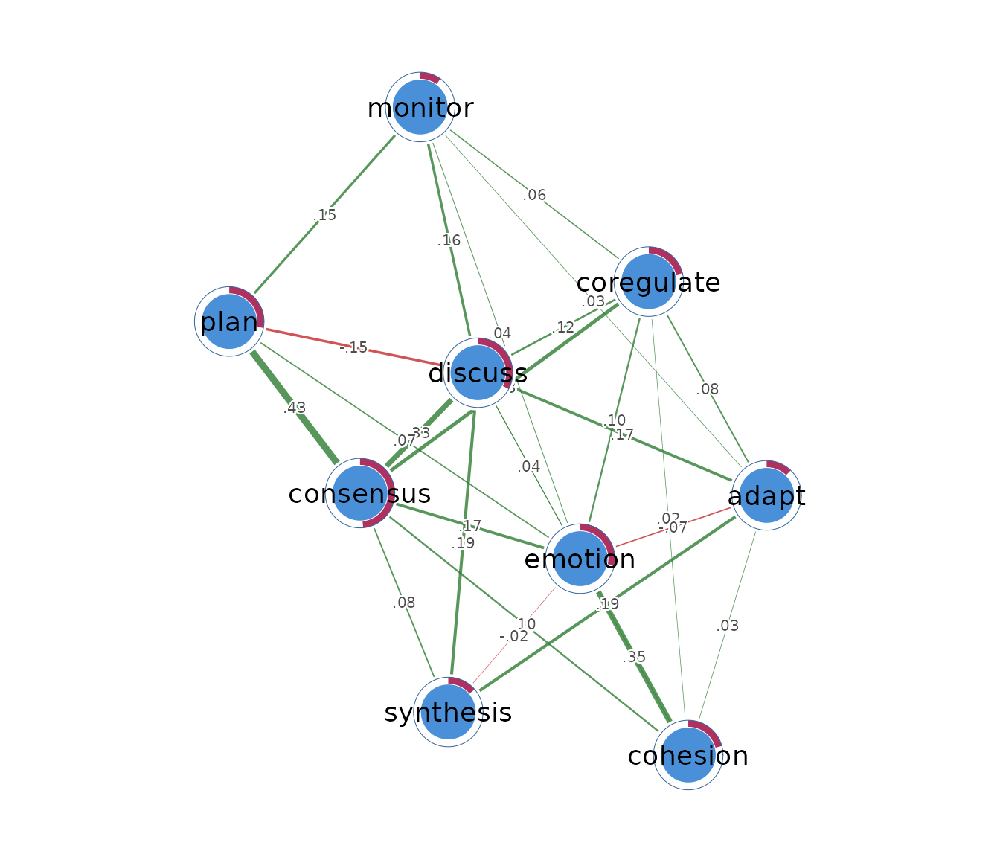
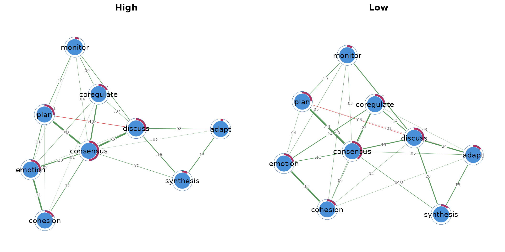
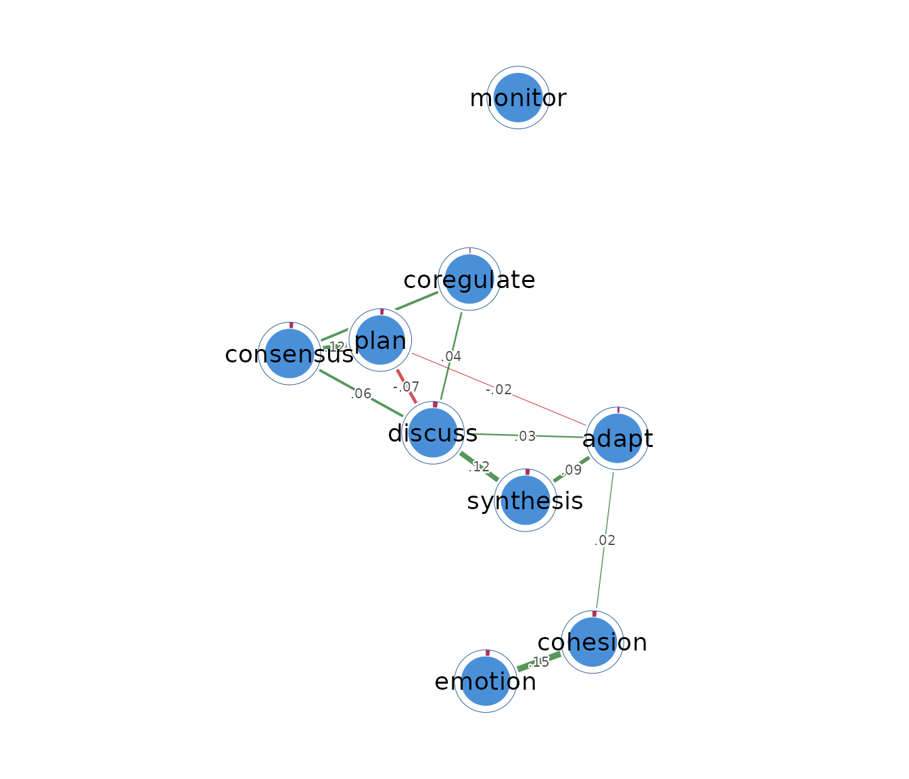
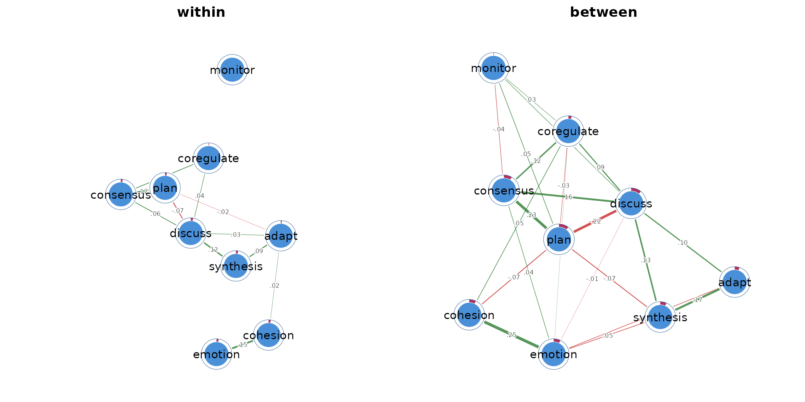

Regulation networks from Dynalytics event data
Source:vignettes/group-networks-from-event-data.Rmd
group-networks-from-event-data.RmdUsing the Dynalytics event-data grammar
psychnets forms the psychometric network analysis component
of the Dynalytics ecosystem and adopts the shared event-data grammar
used throughout the framework. Event records consist of an actor
identifying who performed an event, an action identifying what occurred,
and, where applicable, a time or session variable indicating when the
event took place. Data organized according to this common structure can
therefore be supplied directly to psychnet() without
intermediate restructuring.
When the actor argument is specified,
psychnet() automatically interprets the input as an event
log. By convention, the action variable is assumed to be named
"Action" unless otherwise specified, allowing event data
generated by other Dynalytics packages to be analysed directly. During
preprocessing, the event log is transformed into an actor-by-action
matrix by aggregating the frequency with which each actor performs each
recorded action. This matrix forms the input to the selected
psychometric network estimator, allowing event data to be converted into
a network representation through a single estimation call with all
required preprocessing performed internally.
What a network from event data represents
A network estimated from event data represents statistical
relationships among action frequencies rather than relationships among
individual events. Network estimation requires a data matrix in which
each observation has one value for every node. In
psychnets, this representation is obtained by converting
the event log into an actor-by-action frequency matrix, where actions
constitute the network nodes and the corresponding action counts form
the variables. Edges in the resulting network represent conditional
associations between action frequencies after controlling for the
frequencies of all remaining actions in the model.
For example, consider the actions planning and monitoring. A positive edge between these nodes indicates that actors who engage more frequently in planning also tend to engage more frequently in monitoring than would be expected after accounting for variation in all other recorded actions. Conversely, the absence of an edge indicates that the estimation procedure did not identify a unique conditional association between the frequencies of these actions once the remaining action frequencies were considered. Importantly, these edges quantify conditional statistical dependencies among action frequencies and should not be interpreted as evidence of causal relationships between actions.
The definition of the observational unit is a critical methodological consideration because it determines the interpretation of the estimated network. When each actor’s complete event history is treated as a single observation, the resulting network characterizes between-person differences in action frequencies. Alternatively, dividing each actor’s event history into multiple sessions produces repeated observations within individuals. In this case, person-centered session frequencies can be used to estimate within-person networks that capture the extent to which actions co-vary relative to each individual’s typical pattern of activity. These alternative aggregation strategies address distinct research questions and should therefore be selected according to the substantive aims of the analysis.
The event log
The group_regulation_long data from the optional
tna package contain 27,533 events from 2,000 students. Each
row records Actor, achievement level
(Achiever), group, course, time, and Action.
The nine action categories are adapt,
cohesion, consensus, coregulate,
discuss, emotion, monitor,
plan, and synthesis.
head(event_log)
#> Actor Achiever Group Course Time Action
#> 1 1 High 1 A 2025-01-01 08:27:07 cohesion
#> 2 1 High 1 A 2025-01-01 08:35:20 consensus
#> 3 1 High 1 A 2025-01-01 08:42:18 discuss
#> 4 1 High 1 A 2025-01-01 08:50:00 synthesis
#> 5 1 High 1 A 2025-01-01 08:52:25 adapt
#> 6 1 High 1 A 2025-01-01 08:57:31 consensusThe event log is already in the Dynalytics long format. Repeated rows for the same actor represent different actions in that actor’s activity history.
Estimating one actor-level network with psychnet()
psychnet() recognizes the event log when the
actor argument is supplied. It uses the shared actor-action
grammar, performs the required conversion internally, and fits a
Gaussian graphical model. The default method is the EBIC graphical
lasso.
actor_net <- psychnet(data = event_log, actor = "Actor")
actor_net
#> <psychnet> glasso network
#> nodes: 9 edges: 28 (undirected)
#> lambda: 0.008001 gamma: 0.5
#> optimality (KKT residual): 3.19e-11The fitted network contains 9 action nodes and 28 edges. The selected penalty is at .
Inspecting actor-level edges with summary()
summary() prints the fitted model and returns an edge
table with from, to, and weight.
Each weight is a partial correlation between two action counts after the
other seven action counts are considered.
summary(actor_net)
#> <psychnet> glasso network
#> nodes: 9 edges: 28 (undirected)
#> lambda: 0.008001 gamma: 0.5
#> optimality (KKT residual): 3.19e-11
#> edge weight: range [-0.154, 0.434], mean 0.104The largest positive edge joins consensus and
plan
().
Students who plan more also tend to produce more consensus events above
and beyond their other action frequencies. The
cohesion-emotion edge is also positive
().
The largest negative edge joins discuss and
plan
().
Higher discussion frequency is associated with lower planning frequency
after the other action counts are taken into account. Several retained
edges are very small, including
coregulate-plan (-0.007) and
coregulate-synthesis (0.008), so their
substantive interpretation should be cautious.
Checking numerical optimality with certificate()
certificate() returns method,
certificate, kind, and certified.
For the graphical lasso, the certificate is the largest KKT stationarity
residual.
certificate(actor_net)
#> method certificate kind certified
#> 1 glasso 3.188688e-11 kkt TRUEThe residual is
and certified is TRUE. It indicates that the
fitted precision matrix satisfies the optimization conditions to
numerical precision. This diagnostic checks computation, not sampling
stability or causal validity.
Visualizing the actor-level network
cograph::splot() draws the fitted object when
cograph is available. Psychological styling distinguishes
positive and negative edges and adds the stored predictability
rings.
cograph::splot(actor_net, psych_styling = TRUE)
The layout provides orientation but has no statistical distance scale. Exact interpretation should use the edge table.
Estimating one network per achievement level
psychnet() estimates one network per level when
group names a grouping column. It returns a
psychnet_group object. Here, separate networks are fitted
for high- and low-achieving students.
achievement_nets <- psychnet(data = event_log, actor = "Actor", group = "Achiever")
achievement_nets
#> <psychnet_group> 2 networks by Achiever (method: glasso)
#> group nodes edges n
#> High 9 25 1000
#> Low 9 27 1000The high-achieving network contains 25 edges across 1,000 students. The low-achieving network contains 27 edges across 1,000 students. Edge counts alone do not show that one group has a stronger network, so the weight summaries must also be examined.
summary() returns one row per group with
group, nodes, edges, and
mean_abs_weight.
summary(achievement_nets)
#> group nodes edges mean_abs_weight
#> 1 High 9 25 0.1141111
#> 2 Low 9 27 0.1139959The mean absolute edge weight is 0.114 in both groups. The typical retained-edge magnitude is therefore similar even though the selected structures differ by two edges.
net_centralities() applies to every network in the group
object. It returns strength and expected influence for each action
within each achievement level.
net_centralities(achievement_nets)
#> <psychnet_centrality_group> 2 groups: High, Low
#>
#> --- High ---
#> node strength expected_influence
#> 1 adapt 0.2557087 0.2557087
#> 2 cohesion 0.4572828 0.4572828
#> 3 consensus 1.4481964 1.4481964
#> 4 coregulate 0.4826224 0.4826224
#> 5 discuss 0.9148080 0.7172144
#> 6 emotion 0.7213529 0.7213529
#> 7 monitor 0.3386263 0.3386263
#> 8 plan 0.7092177 0.5116240
#> 9 synthesis 0.3777409 0.3777409
#>
#> --- Low ---
#> node strength expected_influence
#> 1 adapt 0.5044549 0.4798929
#> 2 cohesion 0.5561617 0.5561617
#> 3 consensus 1.2000886 1.2000886
#> 4 coregulate 0.6383543 0.6383543
#> 5 discuss 1.0808622 0.9531748
#> 6 emotion 0.6868285 0.6868285
#> 7 monitor 0.4027815 0.4027815
#> 8 plan 0.6447291 0.4924798
#> 9 synthesis 0.4415186 0.4415186consensus has the largest strength in both groups: 1.448
among high achievers and 1.200 among low achievers. Among low achievers,
discuss has the second-largest strength at 1.081. These are
descriptive differences between the estimated networks. Formal claims
about group differences require a network comparison procedure.
cograph::splot(achievement_nets, psych_styling = TRUE)
Estimating a person-centered session network
psychnet() can infer sessions from gaps in an event-time
column. With time = "Time" and
time_threshold = 300, a pause longer than five minutes
starts a new session. The time values define occasions only. They are
not used to estimate lagged or temporal effects.
When standardize = TRUE, the default,
psychnet() calculates action frequencies for every
actor-session and subtracts each actor’s mean frequencies. It then fits
one pooled network to these person-centered session values. The result
describes which deviations from an actor’s usual action profile tend to
occur together across sessions.
within_net <- psychnet(data = event_log, actor = "Actor", time = "Time", time_threshold = 300)
within_net
#> <psychnet> glasso network
#> nodes: 9 edges: 14 (undirected)
#> lambda: 0.0288 gamma: 0.5
#> optimality (KKT residual): 1.30e-12This person-centered network is the within-actor component of the covariance decomposition. It is not a separate network for each actor, a temporal network, or a random-effects model. The fitted network contains 14 edges, compared with 28 in the actor-level network. Its selected penalty is .
summary(within_net)
#> <psychnet> glasso network
#> nodes: 9 edges: 14 (undirected)
#> lambda: 0.0288 gamma: 0.5
#> optimality (KKT residual): 1.30e-12
#> edge weight: range [-0.074, 0.148], mean 0.042The largest person-centered edge joins cohesion and
emotion
().
In sessions where a student produces more cohesion events than that
student’s usual level, emotion events also tend to be above the
student’s usual level, after the other action deviations are considered.
The discuss-plan edge is negative
().
These edges answer a different question from the actor-level edges and
should not be compared as if they shared the same unit of variation.
certificate(within_net)
#> method certificate kind certified
#> 1 glasso 1.296872e-12 kkt TRUEThe KKT residual is and is certified, indicating numerical optimality to numerical precision.
cograph::splot(within_net, psych_styling = TRUE)
Keeping the within- and between-actor networks
psychnet() returns a psychnet_multilevel
object when session-based event data are fitted with
standardize = FALSE. The object contains the pooled
person-centered network and the between-actor network. The between
network relates actors’ average action profiles. The word multilevel
here refers to the within-between covariance decomposition, not to a
fitted random-effects model.
multilevel_nets <- psychnet(data = event_log, actor = "Actor", time = "Time", time_threshold = 300, standardize = FALSE)
multilevel_nets
#> <psychnet_multilevel> glasso networks (within + between)
#> actors: 2000 occasions: 12305
#> within : 9 nodes, 14 edges
#> between: 9 nodes, 24 edgesThe analysis contains 2,000 actors and 12,305 inferred occasions. The within-actor network has 14 edges, and the between-actor network has 24. The larger between-actor edge count means that more conditional associations are retained among students’ average action profiles than among their session-level deviations.
cograph::splot() recognizes the multilevel object and
displays the two networks as a grid.
cograph::splot(multilevel_nets, psych_styling = TRUE)
Reporting the analysis
A report should identify the Dynalytics actor, action, and time or session columns; define the occasion; state the session-gap threshold; distinguish actor-level, person-centered, and between-actor questions; and report the network estimator and its settings. The report should state explicitly that inferred sessions do not form a temporal network or a random-effects model.
The present analysis passed 27,533 events from 2,000 students
directly to psychnet() using the actor-action grammar. The
actor-level graphical-lasso network contained 28 edges. Networks by
achievement level contained 25 and 27 edges with similar mean absolute
weights. A five-minute session rule produced 12,305 occasions, a 14-edge
person-centered network, and a 24-edge between-actor network.
How event counts and levels are constructed
For actor , occasion , and action , the frequency variable is the number of matching events,
Without sessions, each actor contributes one frequency vector. With sessions, each actor contributes several vectors. Session inference sorts events within an actor by time and starts a new occasion when the gap exceeds the selected threshold.
For nested occasions, the actor mean for action is
and the within-actor deviation is
The between-actor network is estimated from the actor means. The
within-actor network is estimated from the deviations. Person centering
with standardize = TRUE returns only the within component.
Each resulting network uses the same Gaussian graphical estimator as a
cross-sectional frequency network.